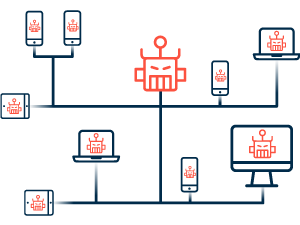

THE ARCHITECTURE OF A BOTNETMalware and spyware are commonly the main way botnet attaks are spread. This kind of malware is developed to look for vulnerable sistems )like not patched computers) automatically, in hope of finding as many devices as possible. |
 |
|---|
 |
The client-server BotnetIn the "conventional" botnet infrastructure, which features a Control and Command server with centralized control over the bots, a client-server architecture is used. Using a common communications interface, such as IRC or HTTP, the C&C server distributes automated commands throughout the botnet. The botmaster can use this method of communication to establish specialized channels between the bots and the C&C, as well as subgroup conversations across the bot army. Client-server botnets are easier to set up, have a well-known infrastructure with a wealth of instructions and models to learn from, and allow the botmaster to communicate directly with all bots in a single two-way session. This design, on the other hand, is reliant on centralized C&C servers, making the botnet easier to take down once identified. Furthermore, the protocols used to establish two-way communication generate more traffic, making victim device exploitation simpler to identify. |
|---|
The P2P BotnetA more recent approach to botnets eliminates the need for C&C servers entirely, instead relying on a decentralized peer-to-peer (P2P) architecture. Each bot acts as both a client and a server under this architecture. The bots can then transfer information between different devices in the network in this manner. In a P2P paradigm, each peer simply has a list of its nearby peers, whereas a botnet's C&C server must have a list of all the bots in its network. Because there is no centralized power in the network, botnet traffic is harder to distinguish from normal traffic, bots are harder to discover, and networks are tougher to take down using this architecture. |
|---|
Types of botnet attacks
|  |
|---|
Botnet |
Leonardo Guanci |
|
|---|